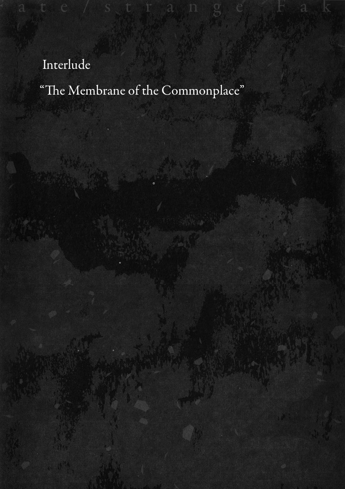

"A seguir, a previsão do tempo.
A baixa pressão atmosférica no oeste de Las Vegas..."
As notícias de sempre saíam da TV. Os moradores da cidade, ora contentes, ora contrariados com o clima que se aproximava, seguiam com seus afazeres. Snowfield ainda não estava em pânico.
A Guerra do Santo Graal de sete dias, um emaranhado de magos, um grupo militar americano não oficial e agentes da Igreja Sagrada, começara no instante em que treze Espíritos Heroicos foram reunidos. Na manhã do segundo dia, eles ainda desfrutavam da paz que o mundo lhes concedera. A fachada, porém, começava a se rasgar de maneira visível.
A explosão do gasoduto no deserto. Os inúmeros animais de estimação levados a clínicas veterinárias por conta de uma doença desconhecida. As pessoas internadas em alas psiquiátricas por seus familiares, depois de afirmarem que "não queriam sair da cidade". A destruição da histórica casa de ópera. O ataque terrorista à delegacia, aparentemente com o objetivo de libertar os criminosos mantidos ali. Suas consequências, que se espalharam até um hotel vizinho. As rajadas repentinas e violentas de vento que sopraram do norte de Snowfield até Crystal Hill, um arranha-céu no centro da cidade.
Vários incidentes haviam ocorrido na cidade, mas ainda não eram suficientes para destruir o cotidiano daqueles que não se deparavam diretamente com eles. Em certos momentos, o "senso comum" acumulado ao longo da vida paralisava seus sentidos. Antes do pânico, esse senso comum formava uma membrana ao redor da vida cotidiana das pessoas, impedindo por um triz que enxergassem a loucura que se aproximava. Ou talvez muitos já tivessem notado e estivessem tentando se agarrar à sensação de segurança fingindo o contrário.
Ainda não.
Ainda está tudo bem.
Ainda não desmoronou.
A cidade ainda está inteira.
Tenho certeza de que logo tudo vai voltar ao normal.
A membrana se enchia de desejo atrás de desejo sem fundamento para que fosse assim. Era por isso que as pessoas que percebiam que, de algum modo, algo estava fora do normal se sentiam felizes, e não inquietas.
Felizes por ainda estarem em um lugar intacto. Felizes por ainda se encontrarem deste lado da fronteira que separa o normal do anormal.
Isso não quer dizer que os moradores de Snowfield fossem especialmente otimistas. A cidade fora construída ao longo de oitenta anos para a Guerra do Santo Graal Falsa. Cada parte dela estava sob a influência de uma sugestão inscrita de forma oblíqua.
Magia na disposição dos prédios públicos e das ruas, nos outdoors e nas árvores à beira da estrada que, individualmente, pareceriam meros sinais até mesmo para o mago comum. Como o esquema de cores de um ambiente científico concebido para produzir determinado efeito psicológico, era uma forma de sugestão que só começava a funcionar quando muitos elementos sobrepostos se reuniam e penetravam nos corpos de seus habitantes. Medir com precisão essa sugestão exigiria o esforço conjunto de um mago dotado de poderes de observação superiores e de alguém que, como Lord El-Melloi II, possuísse a capacidade de reunir pistas a partir de qualquer coisa e de tudo.
Foi isso que permitiu aos "mandantes" esconder por tanto tempo o fato de que toda a cidade de Snowfield estava sob a influência de uma sugestão gigantesca e vaga, destinada a impedir o pânico — até certo ponto. Foi assim que conseguiram mantê-la oculta de magos de passagem, de sociólogos desconfiados com o rápido desenvolvimento da cidade e dos próprios moradores que continuavam vivendo ali. Foi por isso que, quando um animal após o outro começou a desabar, o medo de que a doença pudesse se espalhar para os humanos foi mantido no mínimo.
E assim, os habitantes da cidade saudaram a manhã do segundo dia sem saber de nada. Sem sequer perceber que eles próprios — talvez a própria cidade — eram um grande sacrifício colocado no altar da Guerra do Santo Graal Falsa.
Sugestão, contudo, só faz até certo ponto. Se a membrana — a sensação de segurança — projetada sobre eles fosse esticada demais, cedo ou tarde alcançaria seu limite.
Os mandantes não se importavam. Supunham que, se aquela membrana de sugestão chegasse ao ponto de se romper, eles já estariam além do alcance de qualquer resistência dos moradores comuns. Os mais ansiosos para manter a magia em segredo consideravam até melhor que o tumulto desaparecesse num instante, como um fogo de artifício, em vez de crescer aos poucos. Em suma, os moradores da cidade nem sequer tinham permissão para entrar em pânico.
Orlando Reeve, chefe da polícia, testemunhava mais uma vez esse fato enquanto ouvia as informações que saíam da TV.
"Um mago dos magos", murmurou consigo mesmo, com nojo, estreitando os olhos, "não é diferente de um político corrupto que trabalha duro."
E eu? pensou assim que as palavras lhe saíram da boca.
Enquanto a corrupção permanecesse oculta, era difícil para o público distinguir um político corrupto de um honesto. Nesse caso, magos, que para começo de conversa jamais apareciam diante do público, provavelmente deveriam ser colocados no mesmo saco. Havia exceções, mas, do ponto de vista da população em geral, magos costumavam ser maus.
Orlando tinha plena consciência de que não era uma dessas exceções enquanto escutava as vozes que saíam da TV em seu escritório. Era um programa de notícias de uma emissora local de Snowfield. Na breve pausa antes da próxima batalha, o chefe de polícia — que também era um mago do lado dos mandantes — ouvia com atenção, em silêncio, o fluxo de informações, como se lamentasse o fato de que a voz calma da locutora acabaria falhando.
"Nossa próxima matéria: os efeitos ambientais da explosão do gasoduto no sul de Snowfield..."